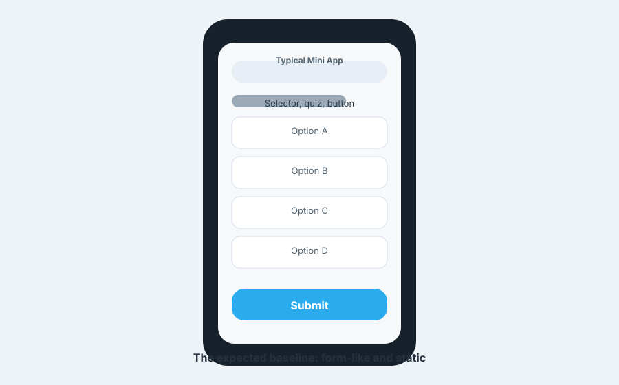
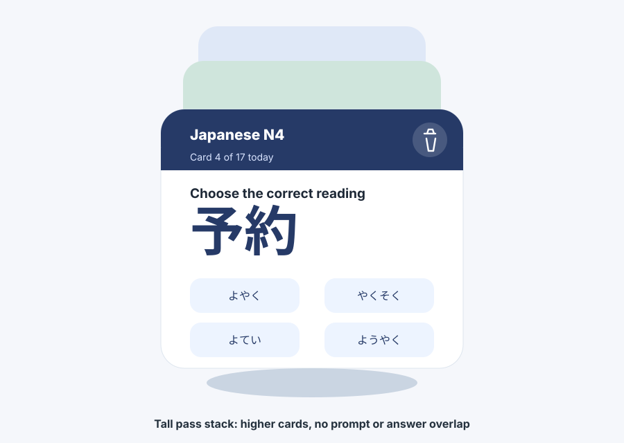
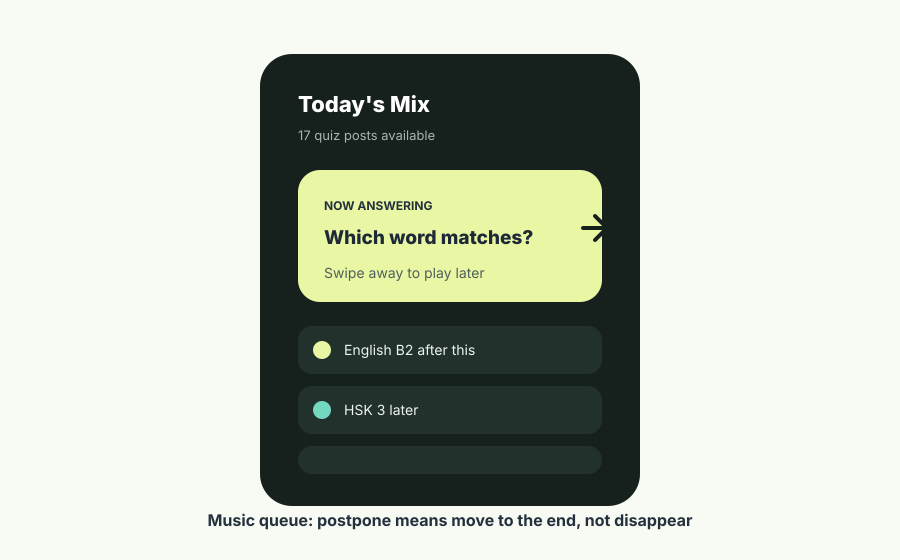
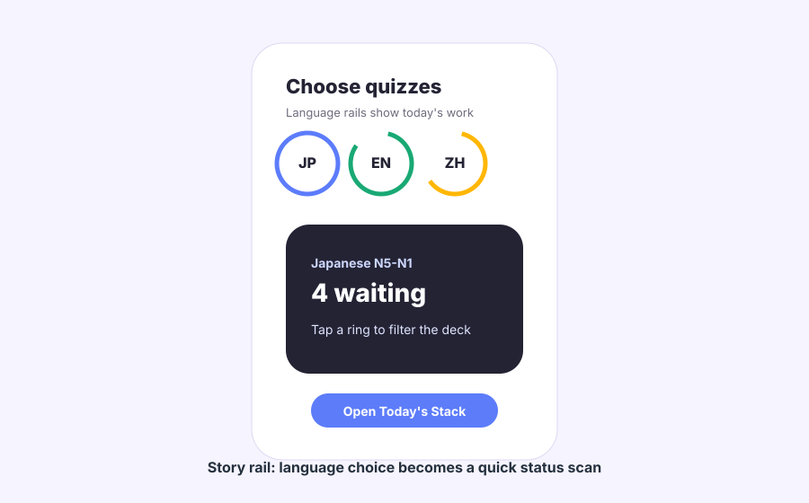
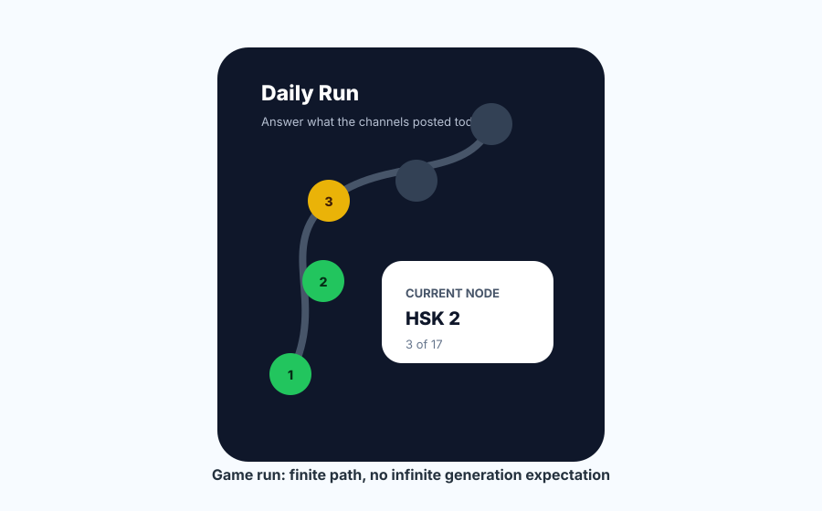
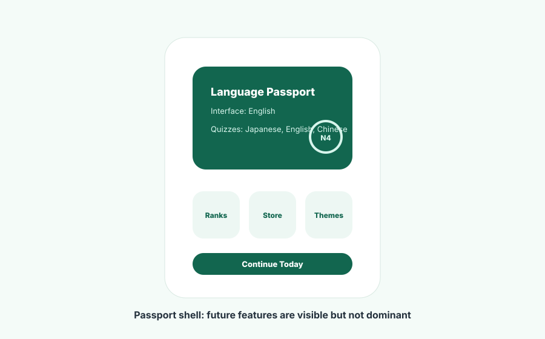

Design Brainstorm: Telegram Mini App Quiz UI
NO_BROWSE. This report uses web research, repo/bot context, and source-backed sketches saved in references/.
Which Ideas To Prototype
| Idea | Novelty | Feasibility | Verdict |
|---|---|---|---|
| Story Rail Language Picker | Medium | High | Parent screen |
| Daily Run Map | High | High | Language + level detail screen |
| Wallet Pass Stack | High | High | Quiz answering screen |
| Music Queue Deck | Medium | High | Behavior model inside stack |
| Language Passport Shell | Medium | High | Future profile/store frame |
The Obvious Approach
Most simple Telegram Mini Apps become a form: language selector, question text, four option buttons, and a submit button. Your current index.html is still the vanilla Telegram sample, so the baseline would naturally drift toward that.

Product Frame
Platform Constraints
GitHub Pages works for the static HTML/CSS/JS shell. Telegram provides native-feeling chrome through theme variables, viewport values, BackButton, MainButton, SecondaryButton, SettingsButton, haptics, and storage APIs.
Data Reality
The Python bot already supports question/options/correct index and optional explanations. For leaderboards, correctness should be judged by the bot/backend, because a static client can be inspected.
IA Recommendation
Chosen hierarchy: First launch -> interface language -> Language Rail dashboard -> Daily Run Map for selected language + level -> tall Pass Stack answering screen -> result/explanation -> back to run map or next card.
- First launch: choose interface language, English or Russian.
- Then choose quiz languages: Japanese, English, Chinese.
- Parent screen: language rings for common users with several selected languages.
- Detail screen: finite daily run map for the selected language and level.
- Answering screen: taller pass stack with room for four options and optional explanation.
- Card states: new, later, selected, answered, refused, done.
Cross-Pollination Ideas
From Wallet: Tall Pass Stack

The pattern: important items become physical-feeling passes with a clear type, status, and primary action.
Applied here: each quiz card is a pass: language, level, source channel, number in today's queue, and question. Answered cards get a stamp. Refused cards get a muted skipped stamp and can be opened from history.
+--------------------------------+
| Japanese N4 Card 4 / 17 |
| Trash |
+--------------------------------+
| Choose the correct reading |
| |
| 予約 |
| |
| [よやく] [やくそく] |
| [よてい] [ようやく] |
| |
| Explanation/result area |
+--------------------------------+
| Swipe aside = answer later |
+--------------------------------+From Music Apps: Today's Mix Queue

The pattern: the current item is prominent; the upcoming queue remains visible and controllable.
Applied here: the active card is Now Answering. Dismissing a card is equivalent to play later. The bottom queue strip shows the next few cards by language and level.
+--------------------------------+
| Today's Mix 17 |
| JP N5 EN B2 HSK 2 JP N4 |
+--------------------------------+
| NOW ANSWERING |
| HSK 2 |
| Which Chinese word means ...? |
| |
| [A] [B] |
| [C] [D] |
+--------------------------------+
| Up next: English B2, JP N4 |
+--------------------------------+From Social Stories: Language Rail

The pattern: circular progress communicates what is waiting without a table.
Applied here: Japanese, English, and Chinese sit as rings above the selected language card. Tap a ring to choose the language, then choose or continue a level.
From Games: Daily Run Map

The pattern: a day becomes a route with nodes. Progress is spatial and motivating.
Applied here: once the user chooses Japanese N4, English B2, or HSK 2, each already-posted quiz is a node in today's route.
From Passports: Profile And Store Shell

The pattern: a profile object collects stamps, achievements, and personalization.
Applied here: the user has a Language Passport: interface language, active quiz languages, level badges, streaks, daily stamps, and future store customizations.
Key Interaction Rules
Dismiss
Dismiss means later today. Horizontal drag past threshold appends the card id to the end of the queue.
Refuse
Refuse is explicit via trash icon. It removes the card from the active queue but keeps it in history.
Answer
Tap one of four options, enable Telegram MainButton, submit, then show correctness and optional explanation.
All Done
Show processed count, answered count, refused count, review explanations, and Language Passport link.
Static Build Strategy
- Host the shell on GitHub Pages.
- Fetch
quizzes/today.jsonor accept quiz payload via Telegram launch/start parameter. - Use
Telegram.WebApp.sendDatafor answer/refuse events when launched from a keyboard Mini App. - Use the bot/backend for leaderboards and anti-cheat scoring.
- Cache preferences in DeviceStorage/localStorage.
Wild Cards
Museum Exhibit Card: the word/kanji/phrase is the artifact, options are placard labels, and explanation opens as a curator note. Beautiful for Japanese and Chinese, but maybe too editorial for fast daily answering.
Calm Study Mode: borrow from meditation apps: one card at a time, soft progress, final recap, less streak pressure.